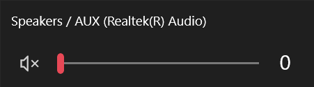
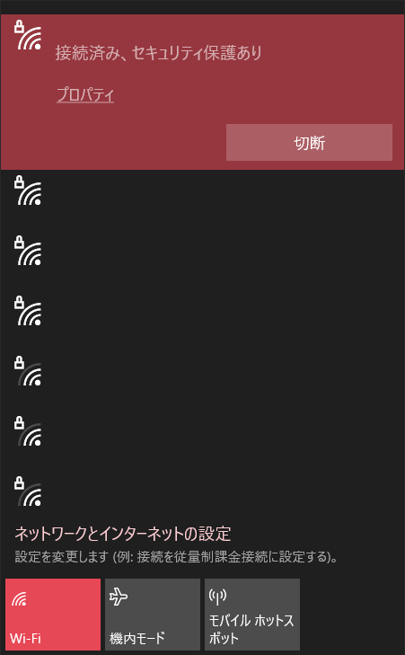
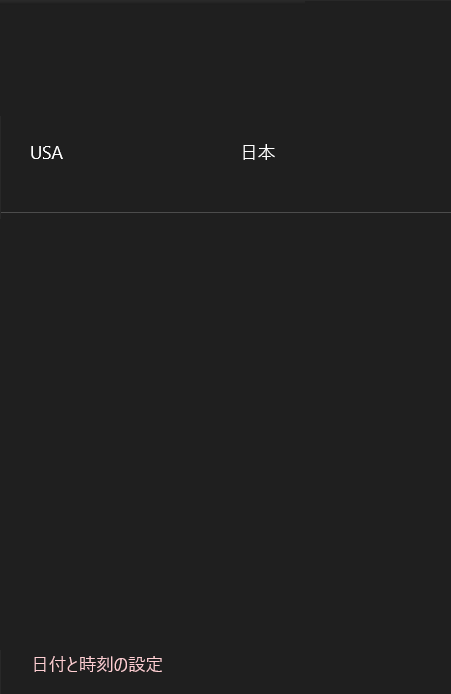
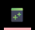
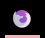
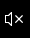

javascript is disabled, some things might not work
about.txt
wa_rebrand.html
about.txt - Notepad++
✕
I program in Python, JavaScript, Bash/Powershell and R.
I'm currently learning C.
wa_rebrand.html - Firefox





